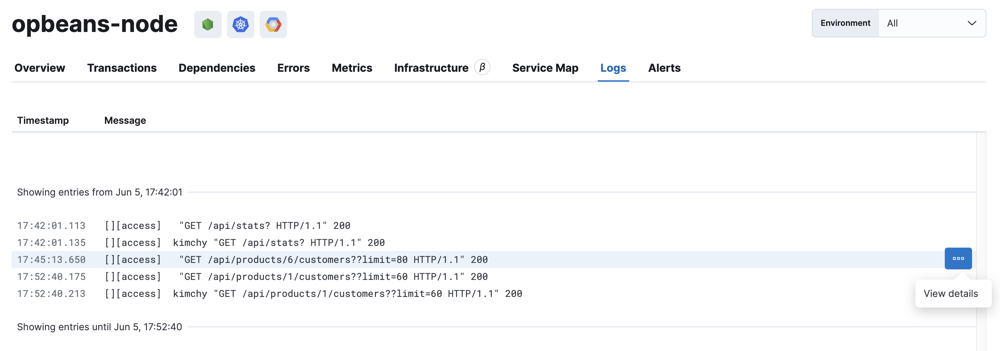

Logs
editThe Logs tab shows contextual logs for the selected service.
Logs provide detailed information about specific events, and are crucial to successfully debugging slow or erroneous transactions.
If you’ve correlated your application’s logs and traces, you never have to search for relevant data; it’s already available to you. Viewing log and trace data together allows you to quickly diagnose and solve problems.
To learn how to correlate your logs with your instrumented services, refer to Stream application logs.

Logs displayed on this page are filtered on service.name